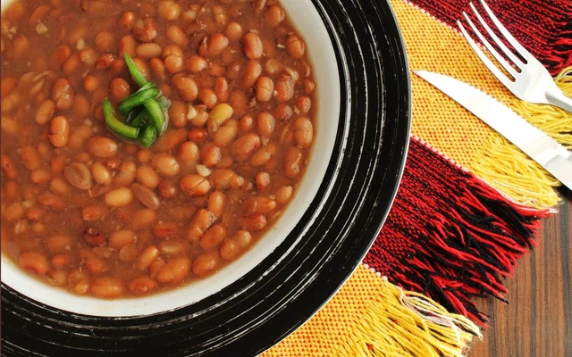

Ingredientes
- 1 xícara (chá) de feijão-carioquinha cru (170 g)
- 4 xícaras (chá) de água (800 ml)
- 1 colher (chá) de sal
- 1 folha de louro
- 1 colher (sopa) de óleo
- 1 pitada de sal
- 2 dentes de alho amassados
Modo de Preparo:
- Deixe o feijão de molho por 2 horas.
- Escorra e transfira para uma panela de pressão.
- Junte a água e o louro.
- Feche a panela de pressão e deixe cozinhar
- Quando a panela pegar pressão conte 35 minutos
- Desligue o fogo e aguarde a panela liberar a pressão
- Em uma frigideira média, coloque o óleo e leve ao fogo alto para aquecer.
- Junte o alho e refogue rapidamente até dourar.
- Adicione uma concha dos grãos do feijão cozido e amasse-os com uma colher.
- Volte o refogado à panela de pressão e deixe cozinhar, com a panela semi-tampada, por 10 minutos, ou até encorpar ligeiramente
- Retire do fogo e sirva em seguida.